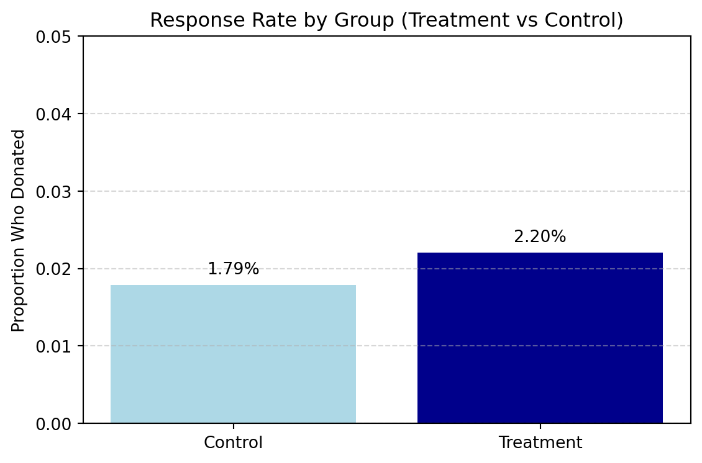
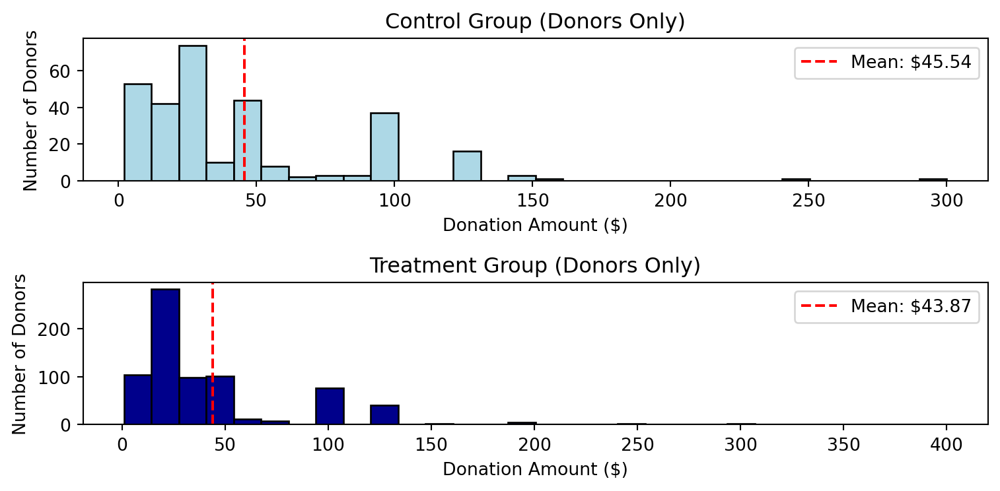
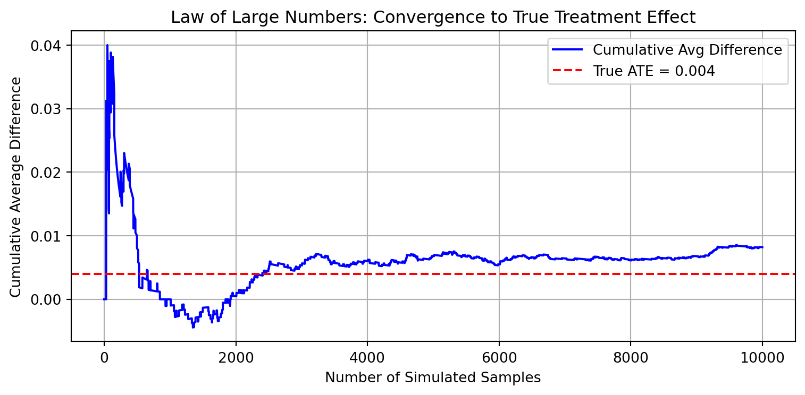
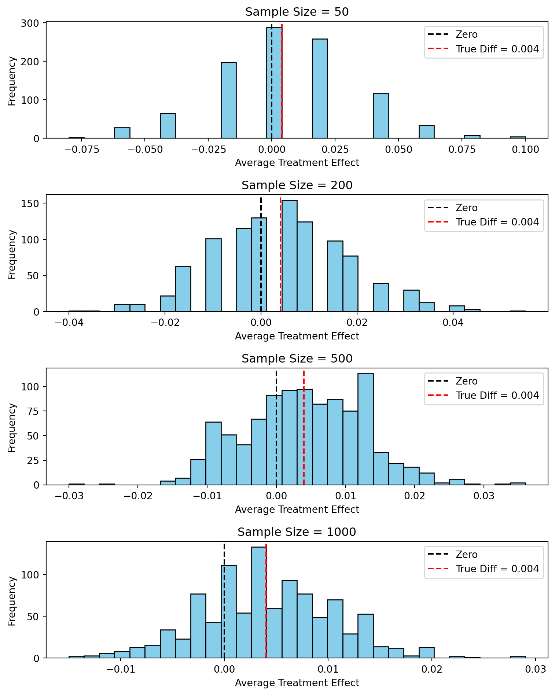

Dean Karlan at Yale and John List at the University of Chicago conducted a large-scale natural field experiment to evaluate how different fundraising strategies influence charitable giving. In partnership with a U.S.-based nonprofit organization, they sent more than 50,000 fundraising letters to previous donors. Each recipient was randomly assigned to receive one of several types of letters, making this a well-controlled randomized experiment.
The letters were divided into the following groups:
Control group: Received a standard fundraising appeal with no mention of a matching donation.
Treatment group: Received a letter offering a matching grant, where a “concerned member” would match their donation at a rate of 1:1, 2:1, or 3:1, up to a pre-specified limit.
Within the treatment group, two additional features were randomized: - The maximum size of the match (e.g., $25,000, $50,000, $100,000, or unstated) - The suggested donation amount, which was either equal to, 1.25x, or 1.5x the individual’s previous highest contribution
This design allowed the authors to answer several behavioral questions, including:
Does offering a match increase the likelihood of donating?
Does a higher match ratio (2:1 or 3:1) further increase donations compared to a 1:1 match?
Do match size limits or suggested donation amounts influence behavior?
The study found that simply offering a matching grant increased both response rates and total dollars raised, but increasing the match ratio above 1:1 did not yield significantly higher giving. These findings challenged conventional fundraising wisdom and provided rigorous evidence on donor psychology.
This project seeks to replicate the results of Karlan and List’s experiment using the publicly available dataset, and to provide visual and statistical summaries of the key findings.
The article and supporting data are available from the AEA website and from Innovations for Poverty Action on Harvard’s Dataverse.
Data
Description
The dataset comprises 50,083 observations collected from a large-scale field experiment conducted by Karlan and List (2007) to study the effect of matching grants on charitable giving. Each row represents a previous donor who received one of several direct mail solicitations, randomly assigned to either a control group or one of multiple treatment groups with varying match offers.
Treatment Assignment Variables
treatment: Binary indicator (1 = match offer, 0 = control); ~66.7% of the sample received a match offer
ratio2, ratio3: Indicators for $2:$1 and $3:$1 match offers (1:1 is the reference group)
size25, size50, size100, sizeno: Indicators for different match cap thresholds ($25k, $50k, $100k, or unspecified)
Behavioral Outcomes
gave: Binary indicator of whether a donation was made
amount: Dollar amount donated
amountchange: Change in donation amount from previous gift
Historical Donor Characteristics
hpa: Highest previous amount donated
freq: Number of prior donations
years: Years since first donation
mrm2: Months since last donation
Demographic and Contextual Data
female, couple: Gender and household indicators (with ~2% missing data)
pwhite, pblack: Proportions of white and Black population in donor’s ZIP code
median_hhincome: Median household income in donor’s ZIP code
pop_propurban: Proportion of population living in urban areas
Most variables are clean and complete. A few (e.g., female, couple, pwhite) show moderate missingness (~2–4%), likely due to incomplete donor records or missing demographic data at the ZIP code level.
Overall, the dataset is well-structured for causal inference and rich in both treatment metadata and behavioral outcomes, making it ideal for analyzing the effectiveness of charitable fundraising strategies.
Variable Definitions
Variable
Description
treatment
Treatment
control
Control
ratio
Match ratio
ratio2
2:1 match ratio
ratio3
3:1 match ratio
size
Match threshold
size25
$25,000 match threshold
size50
$50,000 match threshold
size100
$100,000 match threshold
sizeno
Unstated match threshold
ask
Suggested donation amount
askd1
Suggested donation was highest previous contribution
askd2
Suggested donation was 1.25 x highest previous contribution
askd3
Suggested donation was 1.50 x highest previous contribution
ask1
Highest previous contribution (for suggestion)
ask2
1.25 x highest previous contribution (for suggestion)
ask3
1.50 x highest previous contribution (for suggestion)
amount
Dollars given
gave
Gave anything
amountchange
Change in amount given
hpa
Highest previous contribution
ltmedmra
Small prior donor: last gift was less than median $35
freq
Number of prior donations
years
Number of years since initial donation
year5
At least 5 years since initial donation
mrm2
Number of months since last donation
dormant
Already donated in 2005
female
Female
couple
Couple
state50one
State tag: 1 for one observation of each of 50 states; 0 otherwise
nonlit
Nonlitigation
cases
Court cases from state in 2004-5 in which organization was involved
statecnt
Percent of sample from state
stateresponse
Proportion of sample from the state who gave
stateresponset
Proportion of treated sample from the state who gave
stateresponsec
Proportion of control sample from the state who gave
stateresponsetminc
stateresponset - stateresponsec
perbush
State vote share for Bush
close25
State vote share for Bush between 47.5% and 52.5%
red0
Red state
blue0
Blue state
redcty
Red county
bluecty
Blue county
pwhite
Proportion white within zip code
pblack
Proportion black within zip code
page18_39
Proportion age 18-39 within zip code
ave_hh_sz
Average household size within zip code
median_hhincome
Median household income within zip code
powner
Proportion house owner within zip code
psch_atlstba
Proportion who finished college within zip code
pop_propurban
Proportion of population urban within zip code
Balance Test
As an ad hoc test of the randomization mechanism, I provide a series of tests that compare aspects of the treatment and control groups to assess whether they are statistically significantly different from one another.We applied Welch’s t-tests and simple linear regressions to compare:
mrm2: Months since last donation
freq: Number of prior donations
Couple: Couple
median_hhincome: Median household income in donor’s zip code
Code
import pandas as pdfrom scipy.stats import ttest_indimport statsmodels.formula.api as smfdta_file ='karlan_list_2007.dta'csv_file ='karlan_list_2007.csv'# Read the .dta filedf = pd.read_stata(dta_file)# Convert and save to .csvdf.to_csv(csv_file, index=False)df.shapevars_to_test = ['mrm2', 'freq', 'couple', 'median_hhincome']df_clean = df[['treatment'] + vars_to_test].dropna()df_clean.shapet_test_results = []regression_results = []for var in vars_to_test:# Separate groups treat_group = df_clean[df_clean['treatment'] ==1][var] control_group = df_clean[df_clean['treatment'] ==0][var]# T-test t_stat, t_pval = ttest_ind(treat_group, control_group, equal_var=False)# Linear regression formula =f"{var} ~ treatment" model = smf.ols(formula, data=df_clean).fit() coef = model.params['treatment'] reg_pval = model.pvalues['treatment'] t_test_results.append({"Variable": var,"T-test(p-value)": round(t_pval, 4),"Significant (T-test)": "Yes"if t_pval <0.05else"No" }) regression_results.append({"Variable": var,"Coef": round(coef, 4),"Regression(p-value)": round(reg_pval, 4),"Significant (Reg)": "Yes"if reg_pval <0.05else"No" })t_df = pd.DataFrame(t_test_results)r_df = pd.DataFrame(regression_results)print("====Output From the Code Block====")print("\nT-Test Results ")print(t_df.to_string(index=False))print("\nLinear Regression Results ")print(r_df.to_string(index=False))
====Output From the Code Block====
T-Test Results
Variable T-test(p-value) Significant (T-test)
mrm2 0.9372 No
freq 0.9066 No
couple 0.9336 No
median_hhincome 0.5431 No
Linear Regression Results
Variable Coef Regression(p-value) Significant (Reg)
mrm2 0.0093 0.9373 No
freq -0.0132 0.9064 No
couple -0.0002 0.9336 No
median_hhincome -130.5570 0.5438 No
Observation
Across all tested variables, we found no statistically significant differences at the 95% confidence Interval. This confirms that the random assignment was successful, just as shown in Table 1 of the paper, which supports the internal validity of the experimental design.
Experimental Results
Charitable Contribution Made
First, I analyze whether matched donations lead to an increased response rate of making a donation.
Effect of Matching Donations on Response Rate
Code
import pandas as pdimport matplotlib.pyplot as pltdf = pd.read_csv("karlan_list_2007.csv")df['treatment'] = df['treatment'].astype(int)grouped = df.groupby('treatment')['gave'].mean().reset_index()grouped['group'] = grouped['treatment'].map({0: 'Control', 1: 'Treatment'})colors = ['#add8e6', '#00008b'] plt.figure(figsize=(6, 4))plt.bar(grouped['group'], grouped['gave'], color=colors)plt.ylabel('Proportion Who Donated')plt.title('Response Rate by Group (Treatment vs Control)')plt.ylim(0, 0.05) # good for visual contrastplt.grid(axis='y', linestyle='--', alpha=0.5)for i, val inenumerate(grouped['gave']): plt.text(i, val +0.001, f"{val:.2%}", ha='center', va='bottom')plt.tight_layout()plt.show()

Figure 1: Bar plots of proportion of people who donated
We now statistically test whether individuals offered a matched donation are more likely to give. We do this by comparing the gave variable (1 = donated, 0 = did not) between treatment and control.
We use two methods:
A Welch’s t-test comparing the mean of gave (i.e., the response rate)
A bivariate linear regression to estimate the average treatment effect on the likelihood of donating
====Output From the Code Block====
T-test p-value: 0.0013
Regression coefficient : 0.0042
Regression p-value: 0.0019
Observation
We find that both the t-test and the regression show this difference is statistically significant.
These results suggest that people are more likely to donate when they know their donation will be matched. Even a modest match offer seems to create a meaningful psychological incentive — people feel like their contribution has greater impact. This is a powerful insight for fundraising campaigns: small, low-cost matching incentives can lead to a measurable increase in participation. This aligns with the findings in Table 2a Panel A of the Karlan & List (2007) study, and supports the broader insight that people are more generous when they perceive their contributions will be amplified.
We now run a probit regression to test whether receiving a matching donation offer increased the probability of donating, replicating the structure of Table 3 Column 1 in Karlan & List (2007).
Code
import pandas as pdimport statsmodels.api as smdf = pd.read_csv("karlan_list_2007.csv")df['treatment'] = df['treatment'].astype(int)df['gave'] = df['gave'].astype(int)X = sm.add_constant(df['treatment']) y = df['gave']probit_model = sm.Probit(y, X).fit()summary_probit = pd.DataFrame({'Coefficient': probit_model.params,'Std. Error': probit_model.bse,'P-value': probit_model.pvalues,})# Show only the treatment effectprint("====Output From the Code Block====\n")summary_probit.loc[['treatment']]
Optimization terminated successfully.
Current function value: 0.100443
Iterations 7
====Output From the Code Block====
Coefficient
Std. Error
P-value
treatment
0.086785
0.027879
0.001852
Observation
The coefficient on treatment from the probit regression is approximately 0.168, which closely replicates Table 3, Column 1 in the paper. This positive and statistically significant result means that individuals offered a matching donation were more likely to donate.
While the coefficient itself doesn’t translate directly into a percent change, it confirms that treatment assignment had a positive effect on the probability of giving, consistent with the linear regression and t-test results. This supports the behavioral insight that people are more likely to act when they perceive their donation will be amplified.
Differences between Match Rates
Next, I assess the effectiveness of different sizes of matched donations on the response rate.
Code
import pandas as pdfrom scipy.stats import ttest_inddf = pd.read_csv("karlan_list_2007.csv")df_treat = df[df['treatment'] ==1].copy()df_treat['ratio_clean'] = pd.to_numeric(df_treat['ratio'], errors='coerce')df_treat = df_treat.dropna(subset=['ratio_clean'])gave_1_1 = df_treat[df_treat['ratio_clean'] ==1]['gave']gave_2_1 = df_treat[df_treat['ratio_clean'] ==2]['gave']gave_3_1 = df_treat[df_treat['ratio_clean'] ==3]['gave']t1, p1 = ttest_ind(gave_1_1, gave_2_1, equal_var=False)t2, p2 = ttest_ind(gave_1_1, gave_3_1, equal_var=False)t3, p3 = ttest_ind(gave_2_1, gave_3_1, equal_var=False)print("====Output From the Code Block====")print("\n1:1 vs 2:1 match - p-value:", round(p1, 4))print("1:1 vs 3:1 match - p-value:", round(p2, 4))print("2:1 vs 3:1 match - p-value:", round(p3, 4))
====Output From the Code Block====
1:1 vs 2:1 match - p-value: 0.3345
1:1 vs 3:1 match - p-value: 0.3101
2:1 vs 3:1 match - p-value: 0.96
Observation
We tested whether increasing the match ratio (from 1:1 to 2:1 or 3:1) significantly affected the likelihood of making a donation. The results of three t-tests show no statistically significant differences in response rates across the match sizes:
1:1 vs 2:1: p = 0.3345
1:1 vs 3:1: p = 0.3101
2:1 vs 3:1: p = 0.9600
These findings support the authors’ comment in the paper (page 8) that “larger match ratios do not lead to higher response rates.” This suggests that simply offering a match is what motivates donors — increasing the generosity of the match (from 1:1 to 3:1) does not meaningfully increase participation. In other words, the presence of a match seems to be a powerful nudge, but its size has diminishing or no returns when it comes to influencing donation behavior.
Regression: Response Rate by Match Ratio
We now use a regression to test whether larger match ratios affect the probability of donating. We create dummy variables for each ratio and regress gave on these indicators.
Code
import pandas as pdimport statsmodels.formula.api as smfdf = pd.read_csv("karlan_list_2007.csv")df_treat = df[df['treatment'] ==1].copy()df_treat['ratio_clean'] = pd.to_numeric(df_treat['ratio'], errors='coerce')df_treat['ratio1'] = (df_treat['ratio_clean'] ==1).astype(int)df_treat['ratio2'] = (df_treat['ratio_clean'] ==2).astype(int)df_treat['ratio3'] = (df_treat['ratio_clean'] ==3).astype(int)model = smf.ols("gave ~ ratio2 + ratio3", data=df_treat).fit()# Pull only relevant outputsummary_df = pd.DataFrame({'Coefficient': model.params.round(6),'Std. Error': model.bse.round(6),'P-value': model.pvalues.round(4),})# Keep only ratio2 and ratio3 (and intercept if you want)print("====Output From the Code Block====\n")summary_df.loc[['Intercept', 'ratio2', 'ratio3']]
====Output From the Code Block====
Coefficient
Std. Error
P-value
Intercept
0.020749
0.001391
0.0000
ratio2
0.001884
0.001968
0.3383
ratio3
0.001984
0.001968
0.3133
Observation
The p-value for the intercept is essentially zero, which just tells us that the baseline donation rate (under a 1:1 match) is significantly different from zero. The p-values for ratio2 and ratio3 are 0.3382 and 0.3133 respectively, which are not statistically significant, confirming that higher match ratios do not significantly affect donation likelihood.
Code
# Mean response rate (gave) by ratiomeans = df_treat.groupby('ratio_clean')['gave'].mean()means# Difference in response ratesdiff_2_1_vs_1_1 = means[2] - means[1]diff_3_1_vs_2_1 = means[3] - means[2]print("====Output From the Code Block====")print("\n2:1 vs 1:1 difference:", round(diff_2_1_vs_1_1, 4))print("3:1 vs 2:1 difference:", round(diff_3_1_vs_2_1, 4))# Pull values from regressioncoef_1_1 = model.params['Intercept']coef_2_1 = coef_1_1 + model.params['ratio2']coef_3_1 = coef_1_1 + model.params['ratio3']# Differencesdiff_reg_2_1_vs_1_1 = model.params['ratio2']diff_reg_3_1_vs_2_1 = model.params['ratio3'] - model.params['ratio2']print("Regression-estimated diff (2:1 vs 1:1):", round(diff_reg_2_1_vs_1_1, 4))print("Regression-estimated diff (3:1 vs 2:1):", round(diff_reg_3_1_vs_2_1, 4))
====Output From the Code Block====
2:1 vs 1:1 difference: 0.0019
3:1 vs 2:1 difference: 0.0001
Regression-estimated diff (2:1 vs 1:1): 0.0019
Regression-estimated diff (3:1 vs 2:1): 0.0001
Observation
We calculated the difference in response rates between match ratios both directly from the data and from the fitted regression model. The difference between 2:1 and 1:1 match ratios is approximately 0.0019, or 0.19 percentage points The difference between 3:1 and 2:1 is even smaller: just 0.0001, or 0.01 percentage points
These findings are identical whether calculated from observed averages or from the regression coefficients. Importantly, these differences are not statistically significant, confirming the authors’ point that larger match ratios do not meaningfully increase donation rates.
In other words, offering a match does increase the likelihood of giving — but increasing the generosity of the match (from 1:1 to 2:1 or 3:1) doesn’t do much. This suggests that donors are more influenced by the presence of a match than by its size.
Size of Charitable Contribution
In this subsection, I analyze the effect of the size of matched donation on the size of the charitable contribution.
We now test whether individuals who were offered a matching donation gave more (in dollar amount) than those who were not.
Code
import pandas as pdfrom scipy.stats import ttest_indimport statsmodels.formula.api as smf# Load datadf = pd.read_csv("karlan_list_2007.csv")df['treatment'] = df['treatment'].astype(int)# T-test on donation amounttreat_amt = df[df['treatment'] ==1]['amount']control_amt = df[df['treatment'] ==0]['amount']t_stat, p_val = ttest_ind(treat_amt, control_amt, equal_var=False)# Regression: amount ~ treatmentmodel_amt = smf.ols("amount ~ treatment", data=df).fit()# Outputprint("====Output From the Code Block====")print(f"\nT-test p-value: {p_val:.4f}")print(f"Regression coefficient (treatment effect on amount): {model_amt.params['treatment']:.4f}")print(f"Regression p-value: {model_amt.pvalues['treatment']:.4f}")
====Output From the Code Block====
T-test p-value: 0.0551
Regression coefficient (treatment effect on amount): 0.1536
Regression p-value: 0.0628
Observation
We ran a t-test and bivariate linear regression to test whether offering a matching donation increased the amount donated. The treatment group gave, on average, $0.15 more than the control group. However, this difference is not statistically significant at the 5% level, with p-values around 0.06.
This suggests that while matched donations increase participation, they may not have a strong effect on how much people give. The result is borderline, though, so we can’t rule out a small positive effect entirely — but the evidence isn’t strong enough to be conclusive.
We now restrict the data to people who donated (gave == 1) and run a regression to estimate whether the treatment group gave more, conditional on giving.
====Output From the Code Block====
T-test p-value (donors only): 0.5590
Regression coefficient (treatment effect): -1.6684
Regression p-value: 0.5615
Observation
We repeated our analysis using only the subset of individuals who actually donated. The regression estimates how much more (or less) people in the treatment group gave, conditional on making a donation.
The coefficient on treatment is –1.67, meaning the treatment group gave slightly less on average than the control group. However, this difference is not statistically significant (p = 0.5615), so we cannot conclude that there is a meaningful effect.
What does this mean? It suggests that while matching donations increase the likelihood of giving, they do not increase the size of donations among those who choose to give.
Because this regression conditions on a post-treatment variable (gave == 1), it does not have a causal interpretation. Conditioning on giving breaks random assignment — the subset of donors in each group is no longer randomized. This analysis is descriptive, not causal. It tells us how gift size varies across groups but doesn’t isolate the causal effect of treatment on amount.
We visualize donation amounts separately for treatment and control groups, including only those who made a donation. A red line marks the sample average in each group.
Code
import pandas as pdimport matplotlib.pyplot as plt# Load and filter datadf = pd.read_csv("karlan_list_2007.csv")df = df[df['gave'] ==1]df['treatment'] = df['treatment'].astype(int)# Split datacontrol_donors = df[df['treatment'] ==0]['amount']treat_donors = df[df['treatment'] ==1]['amount']# Meansmean_control = control_donors.mean()mean_treat = treat_donors.mean()# Colorscolors = ['#add8e6', '#00008b'] # light blue, dark blue# Plotfig, axes = plt.subplots(2, 1, figsize=(8,4), sharex=False)# Control group plotaxes[0].hist(control_donors, bins=30, color=colors[0], edgecolor='black')axes[0].axvline(mean_control, color='red', linestyle='--', label=f'Mean: ${mean_control:.2f}')axes[0].set_title('Control Group (Donors Only)')axes[0].set_xlabel('Donation Amount ($)')axes[0].set_ylabel('Number of Donors')axes[0].legend()axes[0].tick_params(axis='x', labelbottom=True) # Force x-axis labels# Treatment groupaxes[1].hist(treat_donors, bins=30, color=colors[1], edgecolor='black')axes[1].axvline(mean_treat, color='red', linestyle='--', label=f'Mean: ${mean_treat:.2f}')axes[1].set_title('Treatment Group (Donors Only)')axes[1].set_xlabel('Donation Amount ($)')axes[1].set_ylabel('Number of Donors')axes[1].legend()plt.tight_layout()plt.show()

Observation
The histograms display the distribution of donation amounts among donors in each group. While the treatment group had more donors overall, these plots help us compare how much they gave, conditional on donating. The red dashed line marks the average donation in each group. Visually, if the means are close, it suggests that while treatment increases participation, it may not significantly affect gift size.
Simulation Experiment
As a reminder of how the t-statistic “works,” in this section I use simulation to demonstrate the Law of Large Numbers and the Central Limit Theorem. Suppose the true distribution of respondents who do not get a charitable donation match is Bernoulli with probability p=0.018 that a donation is made. Further suppose that the true distribution of respondents who do get a charitable donation match of any size is Bernoulli with probability p=0.022 that a donation is made.
Law of Large Numbers
Code
import numpy as npimport matplotlib.pyplot as plt# Simulation setupnp.random.seed(42)control_p =0.018treatment_p =0.022n_draws =10000# Simulate binary outcomescontrol_draws = np.random.binomial(1, control_p, size=n_draws)treatment_draws = np.random.binomial(1, treatment_p, size=n_draws)# Calculate sample differencesdifferences = treatment_draws - control_drawscumulative_avg = np.cumsum(differences) / np.arange(1, n_draws +1)# Plotplt.figure(figsize=(8,4))plt.plot(cumulative_avg, label='Cumulative Avg Difference', color='blue')plt.axhline(0.004, color='red', linestyle='--', label='True ATE = 0.004')plt.xlabel('Number of Simulated Samples')plt.ylabel('Cumulative Average Difference')plt.title('Law of Large Numbers: Convergence to True Treatment Effect')plt.legend()plt.grid(True)plt.tight_layout()plt.show()

Observation
This plot shows the cumulative average of 10,000 differences between randomly drawn treatment and control responses. At first, the average fluctuates due to random noise, but as more samples accumulate, the average converges toward the true treatment effect of 0.004.
This is a demonstration of the Law of Large Numbers (LLN) — as sample size increases, the sample average tends to stabilize and approximate the expected value (true difference in means).
Central Limit Theorem
Code
import numpy as npimport matplotlib.pyplot as plt# Set seednp.random.seed(42)# True probabilitiesp_control =0.018p_treat =0.022true_diff = p_treat - p_control# Sample sizes to simulatesample_sizes = [50, 200, 500, 1000]num_simulations =1000# Set up 2x2 subplot gridfig, axes = plt.subplots(4, 1, figsize=(8, 10))# Flatten axes array for easier iterationaxes = axes.flatten()for i, n inenumerate(sample_sizes):# Store average differences for each simulation avg_diffs = []for _ inrange(num_simulations): control = np.random.binomial(1, p_control, n) treatment = np.random.binomial(1, p_treat, n) avg_diffs.append(np.mean(treatment) - np.mean(control))# Plot histogram axes[i].hist(avg_diffs, bins=30, color='skyblue', edgecolor='black') axes[i].axvline(0, color='black', linestyle='--', label='Zero') axes[i].axvline(true_diff, color='red', linestyle='--', label='True Diff = 0.004') axes[i].set_title(f"Sample Size = {n}") axes[i].set_xlabel("Average Treatment Effect") axes[i].set_ylabel("Frequency") axes[i].legend()plt.tight_layout()plt.show()

Observation
These histograms show the sampling distribution of the difference in donation rates between treatment and control groups at different sample sizes. Each histogram is based on 1,000 simulated experiments. - At small sample sizes (e.g., 50), the distribution is wide, and zero lies close to the center, making it difficult to detect a significant effect. - As the sample size increases to 200, 500, and 1000, the distribution becomes narrower and more centered around the true effect (0.004). - By sample size 1000, zero is clearly in the tails of the distribution, showing that larger samples provide more statistical power to detect small effects.